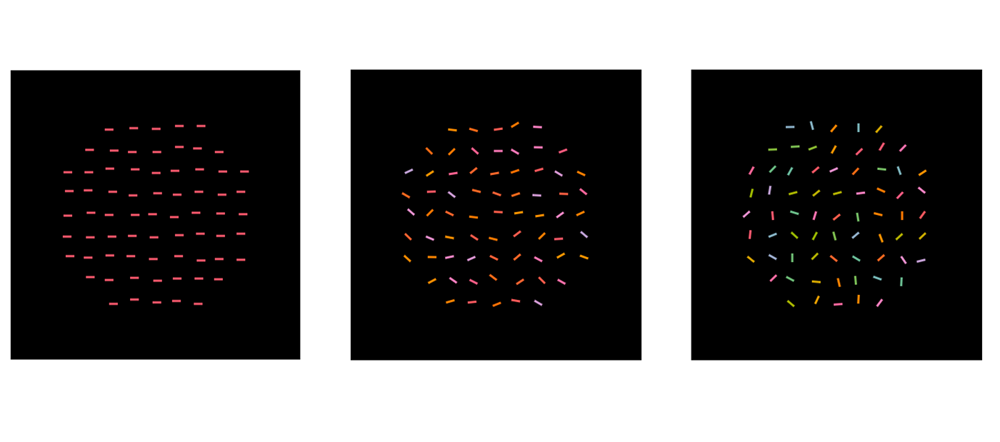
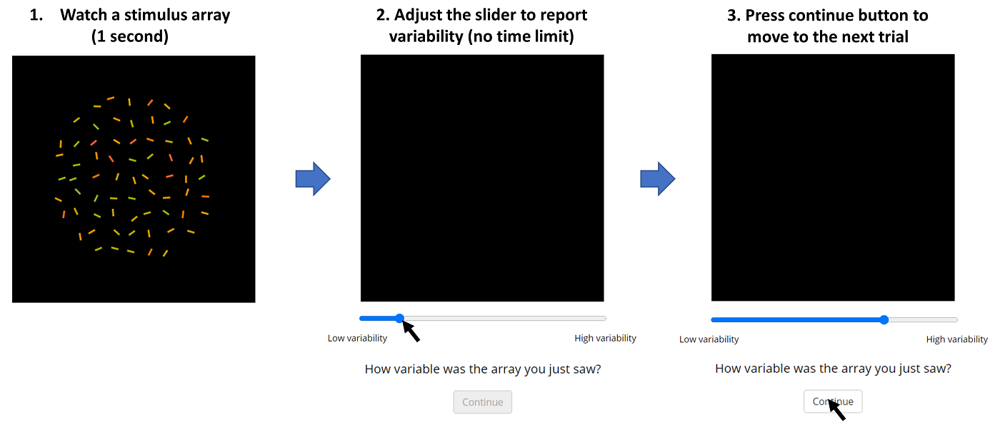

<!DOCTYPE html>
<html>
    <head>
        <title>How variable is this group of items? - Exp1 </title>

        <!-- Note that this experiment was implemented with old version of jsPsych (6.2.0) -->
        <link rel="stylesheet" type="text/css" href="jspsych-6.2.0/css/jspsych.css"/>
        <script type="text/javascript" src="jspsych-6.2.0/jspsych.js"></script>
        <script type="text/javascript" src="jspsych-6.2.0/plugins/jspsych-html-keyboard-response.js"></script>
        <script type="text/javascript" src="jspsych-6.2.0/plugins/jspsych-html-button-response.js"></script>
        <script type="text/javascript" src="jspsych-6.2.0/plugins/jspsych-html-slider-response.js"></script>
        <script type="text/javascript" src="jspsych-6.2.0/plugins/jspsych-canvas-keyboard-response.js"></script>
        <script type="text/javascript" src="jspsych-6.2.0/plugins/jspsych-canvas-slider-response.js"></script>
        <script type="text/javascript" src="jspsych-6.2.0/plugins/jspsych-instructions.js"></script>
        <script type="text/javascript" src="jspsych-6.2.0/plugins/jspsych-fullscreen.js"></script>
        <script type="text/javascript" src="jspsych-6.2.0/plugins/jspsych-external-html.js"></script>
        
        <script src="spectra.min.js"></script>
        <script src="lib_jointVar_ME_210125.js"></script>
        <script src="control_consent_form.js"></script>
        
        <!-- <script type="text/javascript" src="lib/vendors/jquery-2.2.0.min.js"></script>
        <script type="text/javascript" src="lib/jspsych-pavlovia-3.2.5.js"></script> -->
                
    </head>
    <body></body>
    <script>

        // Initialize
        var timeline = [];   

        // var ind_seq1 = Array.apply(0, Array(41)).map(function(_,b){return b;}) // from 0 to 40 (41 numbers)
        // var ind_seq2 = Array.apply(0, Array(40)).map(function(_,b){return 41+b;}) // from 41 to 80 (40 numbers)

        // Exp. conditions
        var stim_info = {};
        var iter = 0;
        var p_iter = 0;
        const ntrials = 150;
        const p_ntrials = 10;

        var rans_ori = []; var rans_hue = []; 
        var means_ori = []; var means_hue = [];
        var p_rans_ori = []; var p_rans_hue = []; 
        var p_means_ori = []; var p_means_hue = [];

        for (i=0; i<ntrials; i++){
            rans_ori.push(  Math.floor(0+Math.random()*179) ); // [0,179]
            rans_hue.push(  Math.floor(0+Math.random()*359) ); // [0,359]
            means_ori.push( Math.floor(1+Math.random()*179) ); // [1,180]
            means_hue.push( Math.floor(1+Math.random()*359) ); // [1,360]
        }

        // mean: randomization
        // range: selected carefully to show sufficiently various examples.
        for (j=0; j<p_ntrials; j++){
            p_rans_ori.push(  Math.floor(0+Math.random()*180) );
            p_rans_hue.push(  Math.floor(0+Math.random()*360) );
            p_means_ori.push( Math.floor(0+Math.random()*180) );
            p_means_hue.push( Math.floor(0+Math.random()*360) );
        }
        p_rans_ori[0] = 0; p_rans_ori[1] = 90; p_rans_ori[2] = 180; 
        p_rans_hue[0] = 0; p_rans_hue[1] = 180; p_rans_hue[2] = 360; 

        // randomization
        rans_ori = randPerms(rans_ori);
        rans_hue = randPerms(rans_hue);
        means_ori = randPerms(means_ori);
        means_hue = randPerms(means_hue);

        // p_rans_ori = randPerms(p_rans_ori);
        // p_rans_hue = randPerms(p_rans_hue);
        [p_rans_ori, p_rans_hue] = randPerms_joint(p_rans_ori, p_rans_hue);
        p_means_ori = randPerms(p_means_ori);
        p_means_hue = randPerms(p_means_hue);
        
        var coord = gen_coordinates(200, 200);                

        // make fullscreen
        timeline.push({
            type: 'fullscreen',
            message: '<p>This experiment will be conducted on the full screen.</p>'+
            '<p>Please press the button below to start the experiment.</p>',
            fullscreen_mode: true
        });

        var turkInfo = jsPsych.turk.turkInfo();
        jsPsych.data.addProperties({
            subject_id: jsPsych.randomization.randomID(16),
            worker_id: turkInfo.workerId,
            task_id: turkInfo.assignmentId
        });

        // var consent_form = {
        //     type: 'external-html',
        //     url: 'https://jinhyeokjeong.github.io/consentforms/consent_form_jvar1.html',
        //     cont_btn: 'last_btn',
        //     check_fn: function(){return true}
        // }
        // timeline.push(consent_form);

        // 1. instructions 
        var instruction = {
            type: 'instructions',
            pages: [
                ''+
                '<p>In this study, you will be asked to watch a group of items having various orientations and colors.</p>'+
                'Your task is to judge how variable this group of items depending on their diversity of orientations and colors.</p>'+
                '<p>You can judge that items with similar colors and orientations are less variable,'+
                ' and items with dissimilar colors and orientations are more variable.</p>'+
                '<p>Items may have highly similar colors and orientations as illustrated on the left, '+
                'but they may also have a wide variety of colors and orientations as illustrated on the right.</p>',
                // 2nd page of instruction 
                ''+
                '<p>As shown above, items having various orientations and colors will be presented for a second.</p>'+
                '<p>To report the variability of items, you can adjust the slider bar shown below the items.</p>'+
                '<p>Please adjust the bar on the slider toward right if you feel that the variability of items appears large,'+
                'and adjust it toward left if you feel that their variability appears low.</p>',
                // 3rd page of instruction
                ''+
                '<p>There is no time limit for response, so you can adjust the slider bar as long as you want.</p>'+
                '<p>But we recommend that you make a quick decision based on your intuitive feelings rather than mulling over it.</p>',
                
                // 4th page of instruction
                '<p>Before starting the experiment, there will be 10 practice trials to help you become familiar with the procedure.</p>' + 
                '<p>When you are ready to start practice trials, press the <b>Next</b> button shown below.<p>'
            ],
            show_clickable_nav: true
        }        
        timeline.push(instruction);

        var prac_stimulus_display = {
            type: 'canvas-keyboard-response',
            stimulus: function(c){
                // define canvas
                var p_ctx = c.getContext("2d");      

                // get range values from conditions (global variables to update data structure)
                p_oriMean = p_means_ori[p_iter];
                p_hueMean = p_means_hue[p_iter];
                p_oriRan = p_rans_ori[p_iter];
                p_hueRan = p_rans_hue[p_iter];

                // background color
                p_ctx.fillStyle = 'black'; 
                p_ctx.fillRect(0,0,c.width, c.height);

                // draw stimulus array
                p_stimArr = drawTexture_colBars(p_oriMean, p_hueMean, p_oriRan, p_hueRan, coord, p_ctx)
                p_iter++;

            }, // draw the array of colored orientations
            canvas_size: [400,400],
            prompt: '<pre><p>          </p></pre>'+'<pre><p>          </p></pre>',
            choices: jsPsych.NO_KEYS,
            trial_duration: 1000, // 5000
            on_finish: function(data){
                // data.ori_angles = p_stimArr.ori_angles;
                // data.hue_angles = p_stimArr.hue_angles;
                data.ori_angles = p_stimArr.ori_angles;
                data.hue_angles = p_stimArr.hue_angles;
                data.ori_mean = p_oriMean;
                data.hue_mean = p_hueMean;
                data.ori_range = p_oriRan;
                data.hue_range = p_hueRan;
                // console.log(data)

                // define node (global variable)
                stim_info = data;
            }  
        };
        
        var main_stimulus_display = {
            type: 'canvas-keyboard-response',
            stimulus: function(c){
                // define canvas
                var ctx = c.getContext("2d");      

                // get range values from conditions (global variables to update data structure)
                oriMean =means_ori[iter];
                hueMean =means_hue[iter];
                oriRan = rans_ori[iter];
                hueRan = rans_hue[iter];

                // background color
                ctx.fillStyle = 'black'; 
                ctx.fillRect(0,0,c.width, c.height);

                // draw stimulus array
                stimArr = drawTexture_colBars(oriMean, hueMean, oriRan, hueRan, coord, ctx)
                iter++;

            }, // draw the array of colored orientations
            canvas_size: [400,400],
            prompt: '<pre><p>          </p></pre>'+'<pre><p>          </p></pre>',
            choices: jsPsych.NO_KEYS,
            trial_duration: 1000,
            on_finish: function(data){                
                // data.ori_angles = stimArr.ori_angles;
                // data.hue_angles = stimArr.hue_angles;
                data.ori_angles = stimArr.ori_angles;
                data.hue_angles = stimArr.hue_angles;
                data.ori_mean = oriMean;
                data.hue_mean = hueMean;
                data.ori_range = oriRan;
                data.hue_range = hueRan;
                // console.log(data)

                // define node (global variable)
                stim_info = data;
            }  
        };        
        var response_display = {
            type: 'canvas-slider-response',
            stimulus: function(c){
                // define canvas
                var p_ctx = c.getContext("2d");      
                // background color
                p_ctx.fillStyle = 'black'; 
                p_ctx.fillRect(0,0,c.width, c.height);
            }, // draw dark resp array
            labels: ['Low variability', 'High variability'],
            canvas_size: [400, 400],
            slider_width: 400,
            slider_start: function(){return Math.floor(0+Math.random()*100)}, // I need to randomize it!!!
            require_movement: true,
            prompt: '<p>How variable was the array you just saw?</p>',
            post_trial_gap: 500, // I need to specify this or randomize it!!
            on_finish: function(data){
                var stim_params = stim_info;
                // console.log(stim_params.ori_angles);
                // console.log(stim_params.ori_mean);

                // data.ori_angles = stim_params.ori_angles;
                // data.hue_angles = stim_params.hue_angles; 
                data.ori_angles1 = stim_params.ori_angles.slice(0,41);
                data.ori_angles2 = stim_params.ori_angles.slice(41,81);
                data.hue_angles1 = stim_params.hue_angles.slice(0,41);
                data.hue_angles2 = stim_params.hue_angles.slice(41,81); 
                data.ori_mean = stim_params.ori_mean; 
                data.hue_mean = stim_params.hue_mean;
                data.ori_range = stim_params.ori_range;
                data.hue_range = stim_params.hue_range;             
            }
        };        

        var practice_block = {
          timeline: [prac_stimulus_display, response_display],
          repetitions: p_ntrials
        }
        timeline.push(practice_block);

        var start_main = {
            type: 'html-button-response',
            stimulus: '<p>The practice session is now finished.</p>'+
            '<p>When you are ready, press the button below to start the experiment.</p>'+
            '<p>This experiment will take about 20 minutes.</p>',
            choices: ['Start the experiment']
        };
        timeline.push(start_main);

        var main_block = {
            timeline: [main_stimulus_display, response_display],
            repetitions: ntrials
        };       
        timeline.push(main_block);

        timeline.push({
            type: 'fullscreen',
            fullscreen_mode: false
        });

        // Finish the experiment
        // An image array for preloading
        var pre_images = ['Instruction_fig1.png', 'Instruction_fig2.png'];

        jsPsych.init({
            timeline: timeline,
            preload_images: pre_images,
            on_finish: function(){
            var el = jsPsych.getDisplayElement();
            el.innerHTML = 'You have completed the experiment!' + '<br> Please copy the following code to the Mturk page. You can then close this window. <br>'+
            '<p style="margin-top:1em;margin-bottom:1em;"><b>'+jsPsych.data.get().values()[0].subject_id +'</b></p>'+
            '<br> Thank you for participation!';
            }
            // on_finish: function(){
            //     jsPsych.data.displayData();
            // }
        })

    </script>
</html>